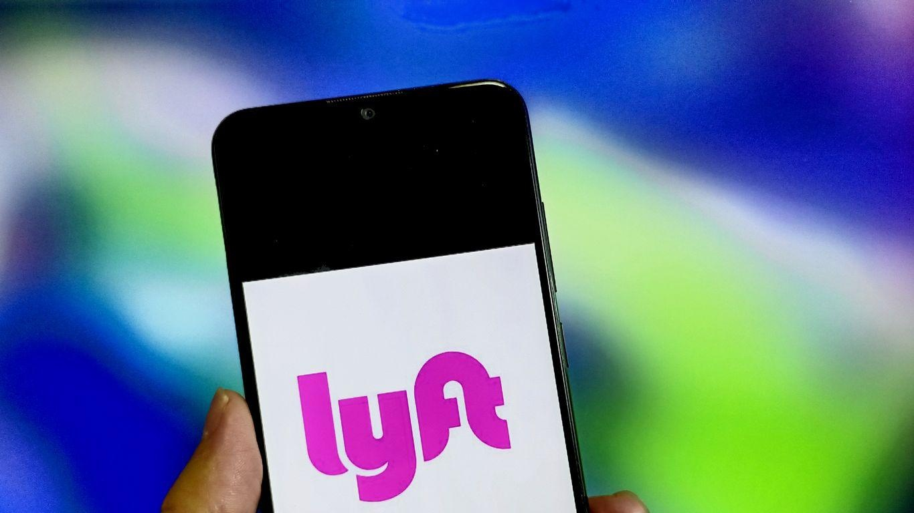

Lyft deploys rapid response communications to return missing cat to Austin-based riderSocial media platforms remain a key listening tool for brands and an effective channel when responding to crises or issues in real time. Why it matters: One unfortunate TikTok or post can quickly chip away at a company's credibility and reputation. Driving the news: Lyft experienced this first-hand over the weekend after Austin, Texas-based rider Palash Pandey's public pleas went so viral that CEO David Risher took to his own social media account to weigh in. Catch up quick: On Saturday,Pandey and his pet cat Tux, took a Lyft ride to the veterinarian clinic. Upon arrival, the driver sped away before Pandey could retrieve Tux from the floor of the back seat, prompting a two-day search. State of play: Pandey's attempts to contact the driver were unsuccessful, and his interaction with the in-app customer service agent was unsatisfactory, which led him to take his issue to social media. His posts quickly went viral as thousands of users tagged the @Lyft and @AskLyft customer service handle demanding the company remedy the problem and share updates on its progress. By the numbers: According to Market Watch, "Pandey's thread detailing his nearly two-day struggle to get his cat back had drawn more than 20 million impressions as of Monday morning." The thread garnered so much attention that Risher responded directly, explaining how Lyft was helping to remedy the matter and apologizing for the initial "awful" response. What they're saying: "We don't typically share the progress of individual customer service requests, but we saw the level of interest start to peak and decided to use all of the communication tools at our disposal to help get the word out and share updates in the search for Tux," says a Lyft spokesperson. Lyft created an email moniker — [email protected] — to track incoming tips, sent push notifications to local Austin riders to aid with the search and created a blog post to share the latest updates and resources in one centralized location. Luckily, Tux was reunited with his owner two days later, and Pandey took to social media once more to thank Lyft for its support and investigation. Yes, but: While the Lyft team changed its customer service playbook in real time, it still wishes it was quicker to share public updates about the work that was taking place behind the scenes. The big picture: This interaction is a prime example of the democratized nature of modern communications. One person with a social media account can grab the attention of thousands and call a company's reputation into question so much so that it prompts a 360-communications campaign and public response from the CEO. The bottom line: The Tux saga points to the importance of ongoing social media monitoring and engagement. Constant social listening is no longer optional — it's a requirement for preserving a company's reputation. 👀 What we're watching: How artificial intelligence could help — and hinder — these customer service workflows and feedback loops and how it might impact customer trust and corporate reputation moving forward. |
 |